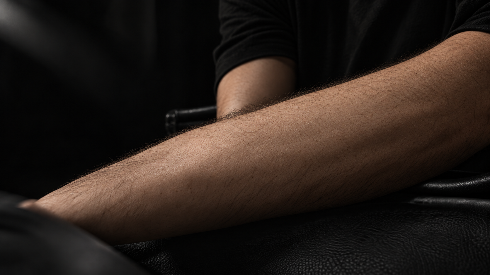

FINE LINE · BOTÂNICA · AUTORAL
Helena Vilar
Encontra força no delicado. Linhas leves, composições botânicas e desenhos que acompanham o movimento do corpo.

MAIS QUE TATUAGEM.
UMA EXTENSÃO DE QUEM VOCÊ É.
Traço, identidade e precisão em uma experiência
criada para
transformar ideia em pele.
01 / NOSSA ESSÊNCIA
Algumas ideias não cabem em uma moldura. No NØIR, elas encontram forma, textura e permanência. Desenhamos a partir de conversas — e tatuamos com a precisão que cada história merece.
Sem pressa. Sem desenhos escolhidos por acaso. Um encontro entre a sua intenção e a linguagem de um artista.
02 / TRABALHOS SELECIONADOS
O detalhe aproxima.
A identidade permanece.
Não é sobre marcar a pele.
03 / QUEM DÁ FORMA
Cada artista, uma linguagem.
Encontre quem conversa com a sua.
FINE LINE · BOTÂNICA · AUTORAL
Encontra força no delicado. Linhas leves, composições botânicas e desenhos que acompanham o movimento do corpo.
BLACKWORK · ORNAMENTAL · REALISMO
Trabalha o encontro entre luz e matéria. Contrastes profundos, referências clássicas e presença em cada detalhe.
04 / O ATELIER
Um espaço reservado para estar presente. Luz na medida, tempo para conversar e atenção a tudo o que acontece antes do primeiro traço.
01 / Atendimento com hora marcada
02 / Materiais estéreis e descartáveis
03 / Orientação antes e depois da sessão
05 / DO PRIMEIRO ENCONTRO À PELE
Sua ideia, suas referências e o que você quer carregar. Começamos pela conversa.
Composição autoral, escolha do artista e estudo de tamanho e posição.
Aprovamos o desenho e ajustamos o estêncil na pele antes de começar a sessão.
Você recebe orientações de cuidados e acompanhamento da cicatrização.
06 / ANTES DA PRIMEIRA LINHA
Explore a posição. Encontre a proporção.
Dê o primeiro passo, sem compromisso.
↔ ARRASTE PARA EXPLORAR A CURVATURA
01 / ESCOLHA SUA ARTE
Desenhos escuros sobre fundo claro funcionam melhor.
02 / ESCOLHA O LUGAR
03 / AJUSTE OS DETALHES
Simulação ilustrativa em corpo de referência. A aplicação real será ajustada pelo artista. Sua imagem é processada somente neste navegador.
07 / HISTÓRIAS QUE FICAM · DEPOIMENTOS ILUSTRATIVOS
“Eu cheguei com uma ideia solta. Saí com um desenho que parece que sempre foi meu.”
“A calma da conversa, o cuidado com o desenho. A experiência começou muito antes da agulha.”
08 / SUA PRÓXIMA HISTÓRIA
Conte o que você imagina.
O primeiro traço começa por aqui.
Atelier de tatuagem.
Seu briefing será aberto no WhatsApp para envio
direto.
O documento PDF e a imagem do simulador podem ser baixados e anexados manualmente à
conversa.
Toque em “Enviar” no aplicativo para confirmar o contato.